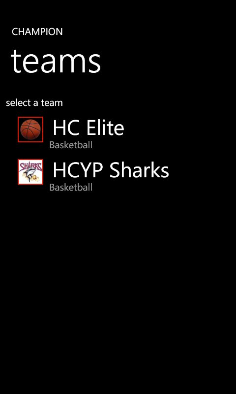
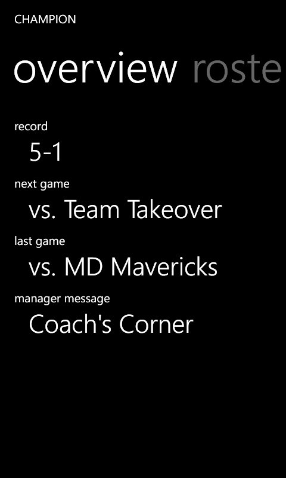
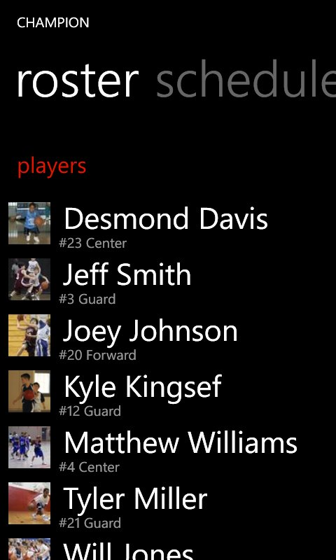
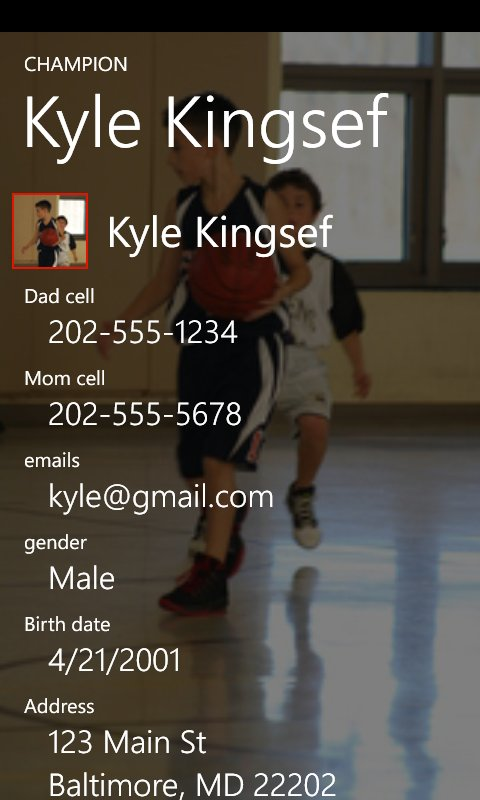
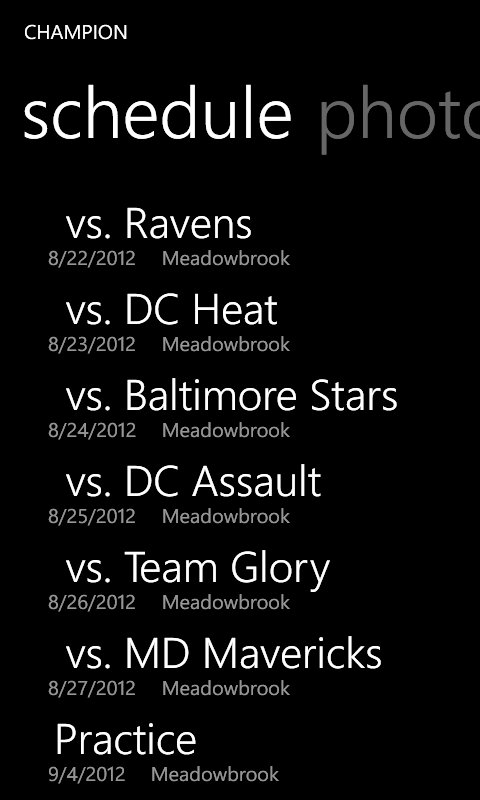
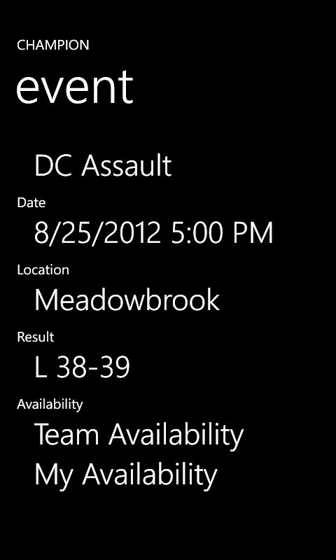
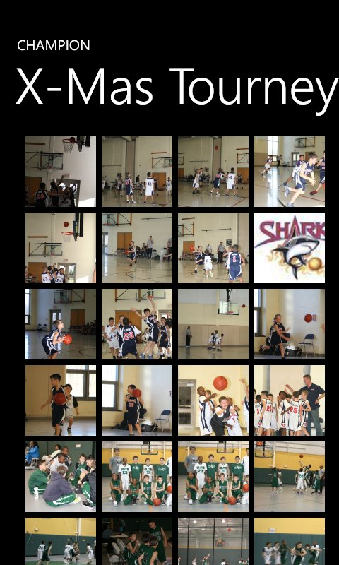
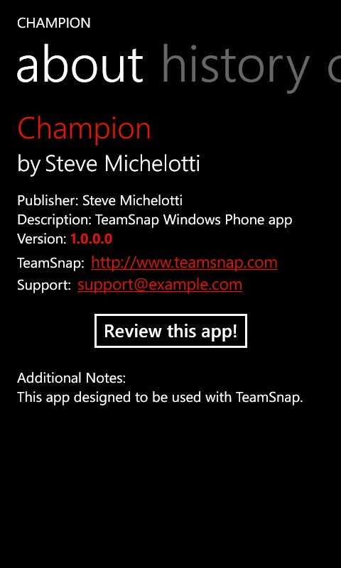

Champion for TeamSnap
"Champion"
The Ultimate
Windows Phone 7 App
For TeamSnap
Latest
- The next version will fully support team messaging with texts, emails, and posts.
- Have a feature request? Click the "Feedback" tab on the right side of the screen, or email us here!
- 
- 
- 
- 
- 
- 
- 
- 
Features
- Complete Roster information
- Team Schedule
- Player Availability
- Team communication with phone and email integration
- View team photos
- Incredibly easy to use
We're excited to see the power of TeamSnap come to Windows Phone 7.
Andrew Berkowitz, VP Product Management, TeamSnap
Now Windows Phone 7 users can make their sports lives easier with TeamSnap!
Wade Minter, Director of Engineering, TeamSnap